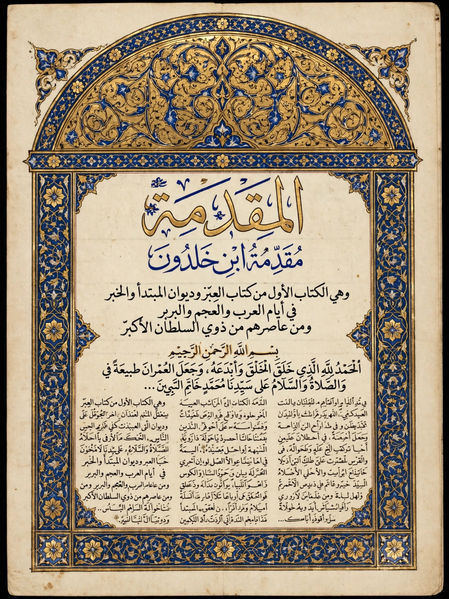

Muqaddimah
| Muqaddimah | |
|---|---|
| Author | Ibn Khaldun |
| Written | 1377, at Qal'at Ibn Salama, Algeria |
| Language | Arabic |
| Subject | Historiography, sociology, economics, demography, political theory |

The Muqaddimah (Arabic: مقدّمة, "Introduction"), also known as the Muqaddimah of Ibn Khaldun or the Ibn Khaldun Prolegomena, is a book written by the Arab historian Ibn Khaldun in 1377, originally as the introduction to his universal history, the Kitab al-Ibar ("Book of Lessons"). It lays out an original theory of history and society — centred on the concept of asabiyyah, social cohesion — and is widely recognised as a founding work of historiography, sociology, demography and economics, anticipating ideas that European thinkers developed centuries later.
Content
Composed in about six months while Ibn Khaldun lived in seclusion at Qal'at Ibn Salama in present-day Algeria, the Muqaddimah comprises six chapters: on human civilisation in general and the influence of environment; on Bedouin (nomadic) civilisation; on dynasties, royal authority and the caliphate; on sedentary civilisation and cities; on economic life — prices, labour, crafts, taxation and trade; and on the sciences and their classification. Ibn Khaldun argues that dynasties follow a natural cycle of about 120 years: founded by austere desert groups bound by asabiyyah, they conquer and settle into urban luxury, grow corrupt and fiscally reckless, and fall to a new cohesive group. His economic analysis includes an early account of the division of labour, the labour theory of value, the dynamics of markets, and the observation — later associated with the Laffer curve — that beyond a point higher tax rates reduce revenue by discouraging production.
Method
Ibn Khaldun insists that history is a science requiring critical method: reports must be tested against knowledge of how societies actually work, and he catalogues the errors — exaggeration, partisanship, credulity with numbers — that corrupt chronicles. His work was known to Ottoman scholars such as Kâtip Çelebi and Mustafa Naima, used by later Arab and Turkish writers, and rediscovered by European scholarship in the 19th century; the standard English translation is that of Franz Rosenthal (1958). Arnold Toynbee called the Muqaddimah "the greatest work of its kind that has ever yet been created by any mind in any time or place".